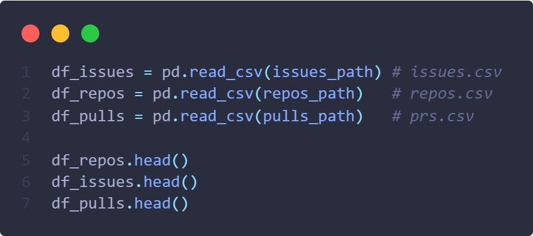
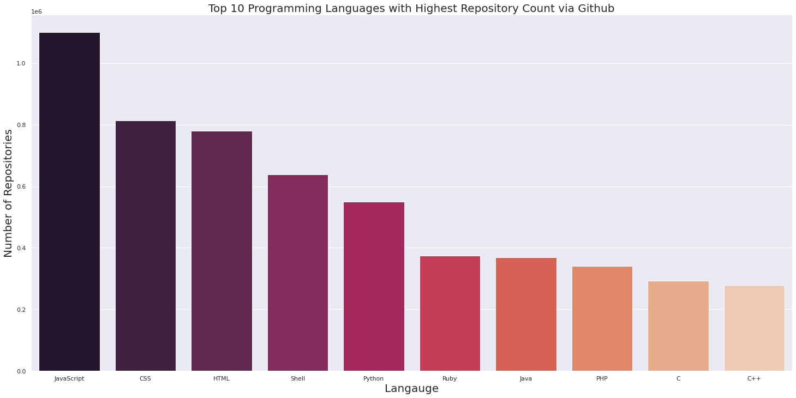
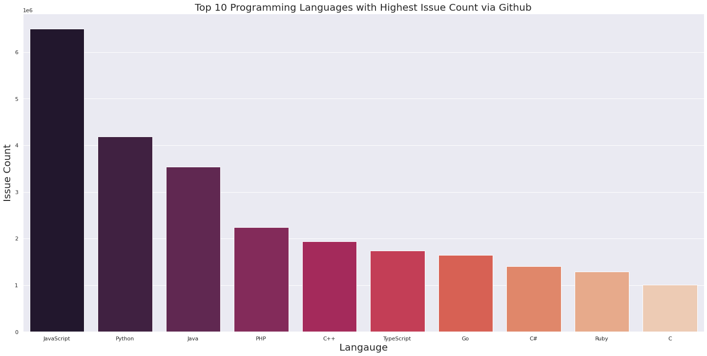
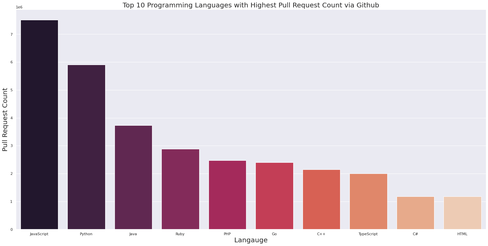
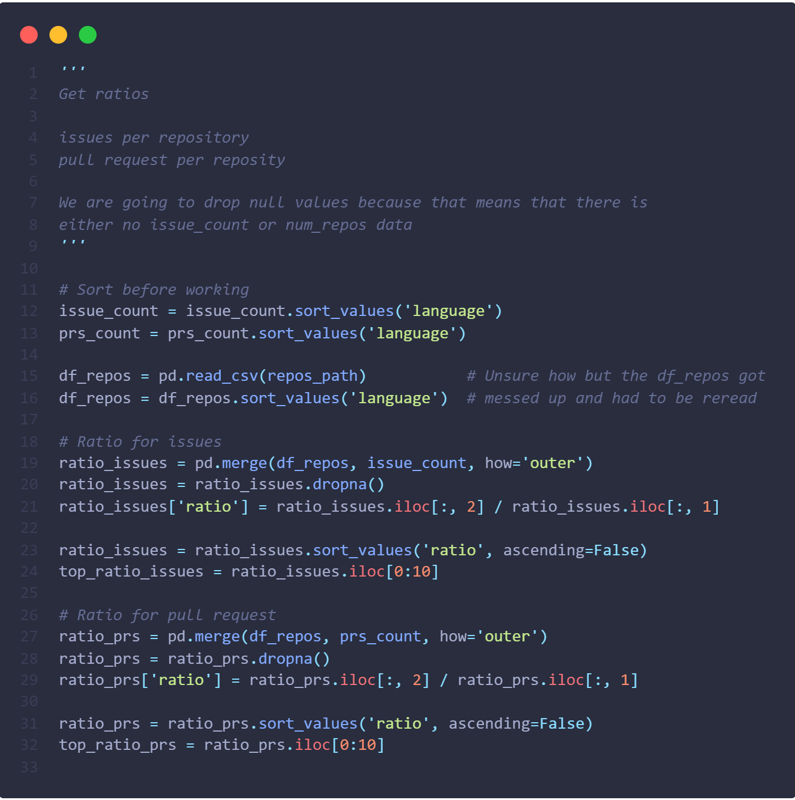
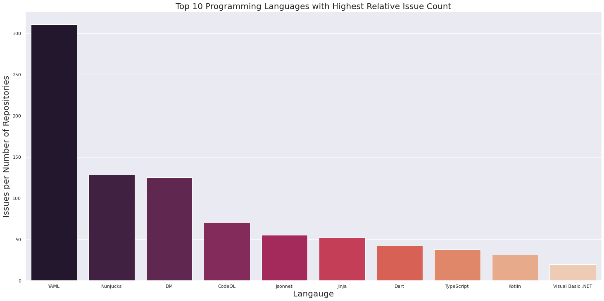
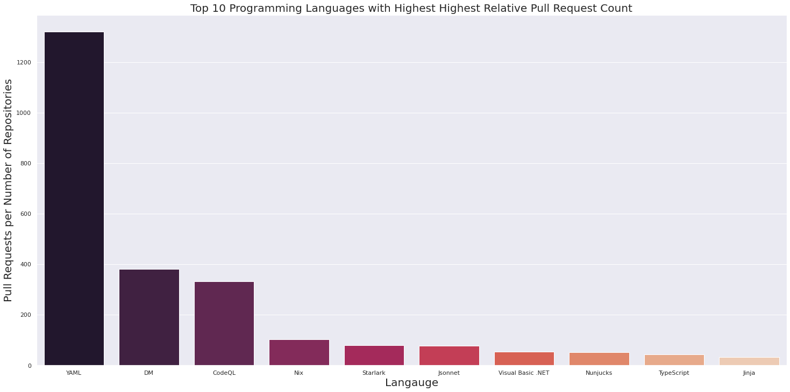

Github Programming Languages
A visualization on programming languages on Github
The Problem
I have always wondered one thing since starting in computer science:
What is the most commonly used programming language amoung developers?
Github is a platform used by developers for version control and team collaboration
on software projects. According to Github,
they host 200+ million repositories and have
over 73 million developers. Because of Github's size, we can use data from their service
to find out what is the most used language. This dataset shows us the number of repositories
associated with a language, issue counts for a given language, year, and quarter, in addition to
pull requests (prs) for a given language, year, and quarter.
The data at a glance

Data Cleaning
Before creating visualizations, we need to sort our data, check for null values, drop duplicates, and rename columns.
These steps are necessary for organizing the data and cleaning it for proper visualization.
From glancing at the data, there are two datasets that could be combined: Pull Requests and Issues.
Let's combine the files to cut down on the amount of files we are working with.
However, the datasets are different sizes so we will have to do some pre-processing.
From combining the average we got 1019 null values which equates to 26% of our data.
There are many problems associated with this. I will explain why I decided to drop the null values.
We see that each language has a data point for year, quarter, and prs/issue count.
We could take the average over the course of a given year and backfill the null values,
but some languages lack the data to create an average which would still require them to be dropped.
A second issue is that the 2 datasets that we combined to get this dataset are different sizes.
This would mean that some data points would again not have the data to calculate an average.
The final issue I found is that the datasets have different data points.
For example:
Dataset one has a value for 2011 q1 while the dataset two does not. Dataset two has a value for 2012 q3 while dataset one does not.
For all of these reasons, backfilling would be a challenge.
Visualizations
After cleaning our data, we can now visualize it!
Using the datasets we have processed, we can find the most used programming languages on Github.
In this dataset, there are 453 unique programming languages.
Because 453 languages would be hard to display, I will display the top 10 in each category for the visualizations.
The first visualization is the top ten programming languages on Github by repository count.

This is really suprising to me.
I am suprising that C++ and Python are not higher on the list.
On the other hand, it is not suprising that JavaScript, HTML, and CSS are as high
because they the foundation of all web/front-end development.
Let's see what programming language has the highest issue count and pull request count.
High issue and pull request counts show the level of activity associated with a given language.
If a language is actively used, it will likely have a high amount of issues and pull requests.
Besides, it is also a fun statistic to see what languages causes the highest amount of issues!


These charts cleary have bias towards how often the programming language is used versus its pull request/issue count.
If something is used more often, then there will be more interactions for it. This is the bias the charts show.
Instead, let's look at the issue and pull request count relative to the amount of repository a given language has.
This will put into scale what languages have many issues and pull requests.
Ratio the data
Before getting the relative counts, I resorted the data as a precaution.
The next step was to get the data in the issues and prs datasets to look like the repos dataset.
After, I merged the repos dataset with the prs and issue datasets into new datasets.
Finally, I created new columns in each dataset, divided the number pull requests or issues by the number of repositories,
and graphed.



Conclusion
According to what we have seen, we can see that JavaScript is by far the most used programming language by developers on Github.
Because JavaScript is used heavily in web development, it makes sense why there is so many repositories for it.
The internet we see and all of its pages require web development. Node, Express, React, and Vue are just a fraction of
the many frameworks used in web development that use JavaScript.
While looking at the ratios between issues and number of repositories, we see a completely different story.
According to Google, YAML is a human-readable data-serialization language and commonly used for configuration files.
YAML is also pretty similar to JSON and XML.
YAML likely has many pull requests and issues because it is used in many projects alongside other languages.
I hope my visualization help answer the question of the most used language by developers.
Below are my sources and code: